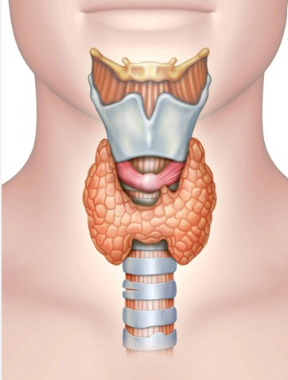
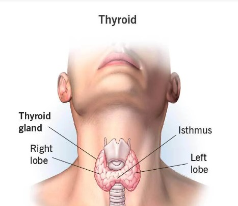

The Thyroid
Your thyroid is an important endocrine gland that makes and releases certain hormones. Your thyroid's main job is to control your metabolism — how your body uses energy. Sometimes, your thyroid doesn’t work properly. These conditions are common and treatable.
Overview What is the thyroid?
Your thyroid is a small, butterfly-shaped gland located at the front of your neck under your skin. It’s a part of your endocrine system and controls many of your body’s important functions by producing and releasing (secreting) certain hormones. Your thyroid’s main job is to control the speed of your metabolism (metabolic rate), which is the process of how your body transforms the food you consume into energy. All of the cells in your body need energy to function. When your thyroid isn’t working properly, it can impact your entire body.
What is the endocrine system?
Your endocrine system is a network of several glands that create and secrete (release) hormones. A gland is an organ that makes one or more substances, such as hormones, digestive juices, sweat or tears. Endocrine glands release hormones directly into the bloodstream. Hormones are chemicals that coordinate different functions in your body by carrying messages through your blood to your organs, skin, muscles and other tissues. These signals tell your body what to do and when to do it. The following organs and glands make up your endocrine system: Hypothalamus. * Pituitary gland. * Thyroid. * Parathyroid glands. * Adrenal glands. * Pineal gland. * Pancreas. * Ovaries. * Testes.
Function What does my thyroid do?
As an endocrine gland, your thyroid makes and secretes hormones. Your thyroid produces and releases the following hormones: Thyroxine (T4): This is the primary hormone your thyroid makes and releases. Although your thyroid makes the most of this hormone, it doesn’t have much of an effect on your metabolism. Once your thyroid releases T4 into your bloodstream, it can convert to T3 through a process called deiodination. Triiodothyronine (T3): Your thyroid produces lesser amounts of T3 than T4, but it has a much greater effect on your metabolism than T4. Reverse triiodothyronine (RT3): Your thyroid makes very small amounts of RT3, which reverses the effects of T3. Calcitonin: This hormone helps regulate the amount of calcium in your blood. In order to make thyroid hormones, your thyroid gland needs iodine, an element found in food (most commonly, iodized table salt) and water. Your thyroid gland traps iodine and transforms it into thyroid hormones. If you have too little or too much iodine in your body, it can affect the level of hormones your thyroid makes and releases. Your thyroid hormones affect the following bodily functions: * How your body uses energy (metabolism). * Heart rate. * Breathing. * Digestion. * Body temperature. * Brain development. * Mental activity. * Skin and bone maintenance. * Fertility.
What other organs and glands interact with the thyroid?
Your endocrine system is an elaborate network of glands and hormones. Many glands and hormones rely on other glands and hormones to send them signals to start working. In addition, certain hormones can suppress other hormones. Your body has a complex system for controlling the level of thyroid hormones in your body. First, your hypothalamus (a part of your brain located on the undersurface of it) secretes thyroid-releasing hormone (TRH), which stimulates a part of your pituitary gland to secrete thyroid-stimulating hormone (TSH). TSH then stimulates your thyroid follicular cells to release thyroxine (T4) and triiodothyronine (T3) if there are adequate levels of iodine in your body. Your thyroid gland and its hormones affect almost every organ system of your body, including: Your cardiovascular system: Your thyroid helps regulate the amount of blood your heart pumps through your circulatory system (cardiac output), heart rate and strength and vigor of your heart's contraction (contractility of the heart). Your nervous system: When your thyroid isn’t working properly, it can cause symptoms that affect your nervous system, including numbness, tingling, pain or a sense of burning in the affected parts of your body. In addition, hypothyroidism can cause depression and hyperthyroidism can cause anxiety. Your digestive system: Your thyroid is involved with how food moves through your digestive system (gastrointestinal motility). Your reproductive system: If your thyroid isn’t working properly, it can cause irregular menstrual periods and issues with fertility.
Can a person live without a thyroid?
Yes, you can live without your thyroid. However, you’ll need to take hormone replacement medication for the rest of your life in order to stay healthy and prevent certain side effects and symptoms. Thyroid removal surgery, known as a thyroidectomy, is a common surgery that can treat certain thyroid conditions.
Anatomy Where is the thyroid located?
Your thyroid gland is located in the front of your neck, straddling your windpipe (trachea). It’s shaped like a butterfly — smaller in the middle with two wide wings that extend around the side of your throat. A healthy thyroid gland is not usually visible from the outside (there’s no appearance of a lump on your neck), and you can’t feel it when you press your finger to the front of your neck.
What are the parts of the thyroid?
There are two main parts of your thyroid: the two halves (lobes) and the middle of the thyroid that connects the two lobes (thyroid isthmus). Your thyroid is made of thyroid follicle cells (thyrocytes), which create and store thyroid hormone (mainly T3 and T4), and C-cells, which secrete the hormone calcitonin.
How big is the thyroid?
Your thyroid is about 2 inches long. A healthy thyroid usually does not stick out from your throat and you can’t see it by looking at your neck. However, certain conditions can cause your thyroid to become enlarged. This is known as goiter. If you have a goiter, you may experience the following symptoms: * Swelling in the front of your neck, just below the Adam's apple. * A feeling of tightness in your throat area. * A change in your voice, such as hoarseness (scratchy voice).
Conditions and Disorders What conditions and disorders affect the thyroid?
There are several different types of thyroid disease. Thyroid disease is very common, with an estimated 20 million people in the United States having some type of thyroid disorder. Women and people assigned female at birth (AFAB) are about five to eight times more likely to be diagnosed with a thyroid condition than men and people assigned male at birth (AMAB). Thyroid diseases are split into two types: primary and secondary. In primary thyroid disease, the disease originates in your thyroid gland. In secondary thyroid disease, the disease originates in your pituitary gland. As an example, if you have a nodule on your thyroid that’s releasing excess amounts of thyroid hormones, it would be called primary hyperthyroidism. If a tumor in your pituitary gland is releasing excess amounts of thyroid-stimulating hormone (TSH), which then stimulates your thyroid to produce excess thyroid hormones, it would be called secondary hyperthyroidism. The four main conditions that affect your thyroid include: * Hypothyroidism (underactive thyroid). * Hyperthyroidism (overactive thyroid). * Goiter (enlarged thyroid). * Thyroid cancer.
Hypothyroidism
Hypothyroidism (underactive thyroid) happens when your thyroid doesn’t produce and release enough thyroid hormones. This causes aspects of your metabolism to slow down. It’s a fairly common condition that affects approximately 10 million people in the United States. It is treatable. * Causes of hypothyroidism include: * Hashimoto’s disease, an autoimmune disease. * Thyroiditis (inflammation of the thyroid). * Iodine deficiency. * A nonfunctioning thyroid gland (when the thyroid doesn’t work correctly from birth). * Over-treatment of hyperthyroidism through medication. * Thyroid gland removal.
Hyperthyroidism
Hyperthyroidism (overactive thyroid) happens when your thyroid produces and releases more thyroid hormones than your body needs. This causes aspects of your metabolism to speed up. Approximately 1 out of 100 people over the age of 12 have hyperthyroidism in the United States. It is treatable. Causes of hyperthyroidism include: * Graves’ disease, an autoimmune condition. * Thyroid nodules. * Thyroiditis (inflammation of the thyroid). * Postpartum thyroiditis (inflammation of the thyroid that happens after giving birth). * Excess iodine in your blood from diet and/or medication. * Over-treatment of hypothyroidism through medication. * A benign (noncancerous) tumor in your pituitary gland.
Goiter
Goiter is an enlargement of your thyroid gland. Goiters are relatively common; they affect approximately 5% of people in the United States Goiters have different causes, depending on their type. Simple goiters:These goiters develop when your thyroid gland doesn’t make enough hormones to meet your body's needs. Your thyroid gland tries to make up for the shortage by growing larger. Endemic goiters:These goiters occur in people who don't get enough iodine in their diet (iodine is necessary to make thyroid hormone). Iodine is added to table salt in the United States and several other countries, so people who live in those countries usually don’t get endemic goiters. Sporadic goiters: These goiters have no known cause in most cases. In some cases, certain medications, such as lithium, can cause sporadic goiters.
Thyroid cancer
Thyroid cancer is cancer that begins in your thyroid tissues. Approximately 53,000 people in the United States receive a diagnosis of thyroid cancer every year. Treatments for most thyroid cancers are very successful. Thyroid cancer is classified based on the type of cells from which cancer grows. Thyroid cancer types include: Papillary: Up to 80% of all thyroid cancer cases are papillary. Follicular: Follicular thyroid cancer accounts for up to 15% of thyroid cancer diagnoses. Medullary: About 2% of thyroid cancer cases are medullary. It’s often caused by a gene mutation. Anaplastic: About 2% of thyroid cancer cases are anaplastic.
What are the early warning signs and symptoms of thyroid problems?
Different thyroid conditions have different symptoms. However, since your thyroid has a large role in certain body systems and processes, such as heart rate, metabolism and temperature control, there are certain symptoms to look out for that could be a sign of a thyroid condition, including: * Slow or rapid heart rate. * Unexplained weight loss or weight gain. * Difficulty tolerating cold or heat. * Depression or anxiety. * Irregular menstrual periods. If you’re experiencing any of these symptoms, talk to your healthcare provider about getting a blood test to check your thyroid function.
What are common tests to check the health of the thyroid?
The first-line test for checking the health of your thyroid is a blood test that measures your levels of thyroid-stimulating hormone (TSH). It’s a screening test for both hypothyroidism and hyperthyroidism. In general, the normal range for a TSH blood test is 0.5 to 5.0 mIU/L (milli-international units per liter). However, this can vary from lab to lab and depending on certain factors, such as pregnancy and your age. Your provider can also check the levels of T4 and T3 (thyroid hormones) in your blood. If your test results come back abnormal your provider may suggest having an imaging test such as a thyroid scan, which uses small amounts of a safe, radioactive material to create images of your thyroid, or a thyroid ultrasound.
How are thyroid conditions treated?
There are several treatment options for thyroid conditions depending on what the conditions are and how severe they are. The three main options for treatment include: * Medication. * Surgery. * Radiation therapy and chemotherapy.
Medication
Medications for thyroid conditions include: * Antithyroid medications: These medications block the ability of your thyroid to make hormones. Healthcare providers may prescribe this for hyperthyroidism. * Beta-blockers: These medications help treat symptoms of hyperthyroidism, such as rapid heartbeat, but they do not treat the thyroid condition itself. * Radioactive iodine: This medication damages thyroid cells, eventually leading to the destruction of your thyroid gland. This is a treatment option for hyperthyroidism and thyroid cancer. * Thyroid hormone medications: These medications are a synthetic form of thyroid hormones for the treatment of hypothyroidism. People who have a thyroidectomy or a nonfunctioning thyroid from radioactive iodine usually need to take these medications for the rest of their life.
Surgery
The most common type of surgery associated with thyroid conditions is a thyroidectomy. A thyroidectomy is the surgical removal of your entire thyroid gland. Thyroidectomy is one of the treatment options for thyroid disease and is the first-line treatment for thyroid cancer. Another surgery option is a lobectomy, which involves removing only a part of your thyroid.
Radiation therapy and chemotherapy
Radiation therapy and/or chemotherapy are treatment options for thyroid cancer. Both therapies kill cancer cells and prevent them from growing. Most cases of thyroid cancer do not require radiation or chemotherapy.
What are the risk factors for developing a thyroid condition?
Thyroid conditions are common and can affect anyone at any age. However, some factors put you at a higher risk of developing a thyroid condition, including: * Having a family history of thyroid disease. * Having an autoimmune condition, such as Type 1 diabetes, rheumatoid arthritis or lupus. * Taking a medication that’s high in iodine. * Being older than 60, especially if you’re a woman or a person who was assigned female at birth (AFAB).
Care How can I keep my thyroid healthy?
The main way to keep your thyroid healthy is to make sure you’re getting enough iodine in your diet. Your thyroid needs iodine to make thyroid hormones. The good news is that the majority of people get adequate amounts of iodine through iodized table salt and foods that are fortified with iodine. Other food sources that contain iodine include: * Cheese. * Cow’s milk. * Eggs. * Yogurt. * Saltwater fish. * Shellfish. * Seaweed. * Soy milk. * Soy sauce. However, it’s important not to consume too much iodine because it can cause problems. If you have any questions or concerns about your thyroid health, don’t be afraid to talk to your healthcare provider.
When should I call my doctor about my thyroid?
If you’re experiencing symptoms of thyroid disease, such as changes in your weight, heart rate and temperature sensitivity, contact your healthcare provider. They can run a simple blood test to see if your thyroid is the cause of your symptoms. A note from Cleveland Clinic Your thyroid is an important gland in your endocrine system that affects many aspects of your body. Thyroid disease is very common and treatable. If you experience any thyroid disease-related symptoms or want to know if you have any risk factors for developing thyroid disease, don’t be afraid to talk to your healthcare provider. They’re there to help you. Return to previous page